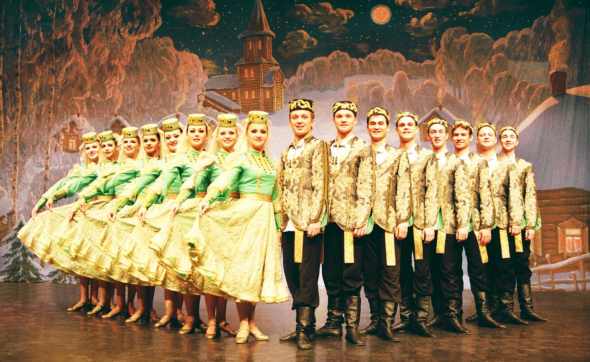

Eine Spukgeschichte ?

Eine „Russische Weihnachtsrevue“ begeisterte 2O18 viele Neubrandenburger. War „IVUSCHKA“ (Weidenbäumchen) etwa ein Spuk? Ich glaube nicht an den „Domowoi“, den russischen Hausgeist und seinen Spuk. In der DDR betreute ich mehrfach weißrussische Kinder, die nach der atomaren Katastrophe in Tschernobyl zur Erholung bei uns waren. Da erzählte mir einmal eine russische Betreuerin in unserem Ferienheim, dass in ihrem Zimmer nachts immer geklopft würde. Sie habe dem Hausgeist schon Süßigkeiten hingestellt, um ihn gütig zu stimmen. Der Hausmeister und ich untersuchten das Haus, die Heizung usw. und stellten fest, dass über dem Flachbau der Unterkunft eine große Eiche stand, deren Eicheln auf das Dach fielen, so dass nachts durch das offene Fenster ein Klopfgeräusch zu hören war. Wir boten einen Umzug in ein unteres Zimmer an, und der Spuk mit dem Hausgeist hatte sich damit für mich erledigt.
Jetzt, nach rund 3O Jahren schenkte unsere Tochter meiner Frau und mir Karten für die „Russische Weihnachtsrevue“ in Neubrandenburg. Das staatliche akademische Ensemble wurde vor 5O Jahren in der Region Tambow bei Moskau gegründet und steht unter der Leitung von Prof. Dr. Alexander Popovitschev. Es erhielt schon viele hohe Auszeichnungen für seine kulturelle Arbeit in Ost und West. 2O14 und 2O15 nahm es als einziges russisches Ensemble am UNESCO Festival „Tanz und Musik der Welt“ auf dem sich die 1O besten Ensembles aller Länder präsentieren, teil.
Um in die Konzerthalle in Neubrandenburg zu kommen musste ich zunächst meine Tochter vom Bahnhof Sternfeld mit dem Auto abholen. Ich fuhr morgens etwas zeitiger los, um noch kurz im Nachbarort meinen Bekannten aufzusuchen. Ich rüttelte und klopfte an der Tür. Da sie verschlossen fuhr ich weiter zum Bahnhof. Als der Zug ankam, stieg niemand aus. Ich wunderte mich, stellte dann aber fest, dass ich ja noch den vorherigen Zug erreicht hatte. Meine Tochter kam pünktlich und als ich zu Hause war, rief mich mein Bekannter an und fragte, warum ich nicht gekommen sei. Er beteuerte, die Tür sei offen gewesen. Ich fand das etwas verwunderlich. Später übernahm meine Tochter das Auto und fuhr mit uns nach Neubrandenburg. Dort ging an der ersten Ampel der Motor aus. Er sprang zum Glück wider an, aber das Spiel wiederholte sich ständig in der überfüllten Stadt, bis wir endlich eine, allerdings für andere reservierte Parklücke fanden. Nun machten wir uns auf den Weg in die Konzertkirche. Dort riefen wir unsere zwei Enkel an und baten sie, uns mit ihrem Auto nach der Veranstaltung abschleppen zu kommen.
Die Gänge und Garderoben in der Konzertkirche füllten sich. Man sah, es würde kein Platz leer bleiben. Viele Ältere kamen mit ihren Kindern und Enkeln, weil sie solche Ensembles aus Sowjetzeiten kannten. Tische mit russischen Souvenieren und Programmheften gaben eine erste Einstimmung. Doch das Geld saß nicht so locker, dass viel gekauft wurde. Nach kurzer russischsprachiger Eröffnung und etwas längerer deutscher Einführung ins Programm begann ein musikalisches und tänzerisches Feuerwerk, das sich mit den beliebten Vorführungen der Vergangenheit messen konnte. Die klangvollen Chor- und Orchesterwerke mit original russischen Instrumenten und Motiven, die akrobatischen Tanzleistungen und die Vielzahl der handgefertigten farbenfrohen Kostüme können hier nicht beschrieben werden. Da müsste man schon auf das Programmheft oder auf die vom Konzertbüro Godehardt Schönherr angebotene DVD zurückgreifen. Die Künstler wurden mit sehr viel Beifall bedacht und verabschiedet.
Solche lange vorher ausverkauften Veranstaltungen russischer Künstler würden bestimmt gern viel öfter besucht. Wenn sie öfter angeboten würden, und viele Bürgerinnen und Bürger sowie Kinder und Jugendliche besser bei Kasse wären. Die russische Kunst und Kultur mit ihrem großen humanistischen Inhalt wäre ein starkes Mittel gegen neonazistische Tendenzen nicht nur in Deutschland. Es ist unverantwortlich, den Kulturaustausch mit Russland zur Entspannung zu behindern und lieber auf die Manöver der Bundeswehr und der NATO zu setzen. Es ist offensichtlich, wer am Waffengeschäft interessiert ist.
Als wir nach der Veranstaltung die Konzertkirche verließen, machten die Mitglieder des Ensembles schon ihren Bus reisefertig. Sie ließen auf jeden Fall einen großen Nachhall zurück. Der Parkplatz leerte sich schnell, und bis unsere beiden Enkel mit ihrem Auto kamen, setzten wir unser Auto auf einen anderen Platz um. Es war wieder anstandslos angesprungen. Nach dem Eintreffen der Enkel, einer kurzen Lagebesprechung, einem nichts Verdächtiges verratenden Blick mit der Taschenlampe in den Motorraum ließen wir das Problemauto für die Heimfahrt starten und fuhren mit dem anderen hinterher. Es lief alles, auch an den Ampeln, ohne geringste Störung. Es war schon spät. Wir stellten die Autos ab, bedankten uns für die Hilfe und betraten die Wohnung. Es war Zeit, meine abendliche Tablette zu nehmen. Ein Griff, sie fiel mir aus der Hand und war verschwunden. Ich sagte zu meiner Frau, dass ich vielleicht dem Hausgeist etwas von unserem russischen Konfekt abgeben sollte. Irgendwie spukt es bei uns. Des Bekannten offene Tür war verschlossen, das Auto macht was es will, die Tablette löst sich in Luft auf. Die Russen haben bestimmt so einen Kobold mitgebracht. Aber, meint sie, dein Auto ist doch ein Franzose und auf dem Rücksitz liegt eine gelbe Weste. Vielleicht streikt es?
Nein, sage ich, es sind die Russen! Das ist keine Frage, das weiß doch heute fast jeder.
Mit den Franzosen haben die schon im Zweiten Weltkrieg sympathisiert.
Den Russen ist doch alles zuzutrauen!
Wie soll ich denn sonst den Spuk erklären?